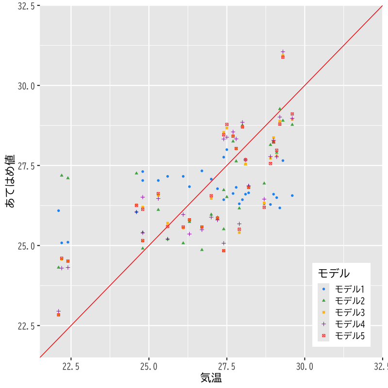

回帰分析
予測と発展的なモデル
(Press ? for help, n and p for next and previous slide)
講義の予定
- 第1日: 回帰モデルの考え方と推定
- 第2日: モデルの評価
- 第3日: モデルによる予測と発展的なモデル
回帰分析の復習
線形回帰モデル
- 目的変数 を 説明変数 で説明する関係式を構成:
- 説明変数: \(x_1,\dotsc,x_p\) (p次元)
- 目的変数: \(y\) (1次元)
回帰係数 \(\beta_0,\beta_1,\dotsc,\beta_p\) を用いた一次式:
\begin{equation} y=\beta_0+\beta_1x_1+\dotsb+\beta_px_p \end{equation}誤差項 を含む確率モデルで観測データを表現:
\begin{equation} y_i=\beta_0+\beta_1 x_{i1}+\cdots+\beta_px_{ip}+\epsilon_i \quad (i=1,\dotsc,n) \end{equation}
問題設定
確率モデル:
\begin{equation} \boldsymbol{y} =X\boldsymbol{\beta}+\boldsymbol{\epsilon} \end{equation}式の評価: 残差平方和 の最小化による推定
\begin{equation} S(\boldsymbol{\beta}) =(\boldsymbol{y}-X\boldsymbol{\beta})^{\mathsf{T}} (\boldsymbol{y}-X\boldsymbol{\beta}) \end{equation}
解
解の条件: 正規方程式
\begin{equation} X^{\mathsf{T}}X\boldsymbol{\beta} =X^{\mathsf{T}}\boldsymbol{y} \end{equation}解の一意性: Gram 行列 \(X^{\mathsf{T}}X\) が正則
\begin{equation} \hat{\boldsymbol{\beta}} = (X^{\mathsf{T}}X)^{-1} X^{\mathsf{T}}\boldsymbol{y} \end{equation}
寄与率
決定係数 (R-squared):
\begin{equation} R^2 = 1-\frac{\sum_{i=1}^n\hat{\epsilon}_i^2}{\sum_{i=1}^n(y_i-\bar{y})^2} \end{equation}自由度調整済み決定係数 (adjusted R-squared):
\begin{equation} \bar{R}^2 = 1-\frac{\frac{1}{n{-}p{-}1}\sum_{i=1}^n\hat{\epsilon}_i^2} {\frac{1}{n{-}1}\sum_{i=1}^n(y_i-\bar{y})^2} \end{equation}不偏分散で補正
事例
東京の8月の気候 (気温,降雨,日射,降雪,風速,気圧,湿度,雲量) に関するデータ(の一部)
date temp rain solar snow wind press humid cloud 213 2019/8/1 30.5 0.0 20.55 0 2.5 1008.5 80 1.8 214 2019/8/2 30.2 0.0 20.24 0 2.7 1008.4 80 2.8 215 2019/8/3 29.4 0.0 25.03 0 2.9 1008.7 78 1.0 216 2019/8/4 29.4 0.0 24.62 0 2.8 1009.5 76 3.0 217 2019/8/5 29.8 0.0 26.72 0 3.0 1009.5 75 2.8 218 2019/8/6 30.3 0.0 24.18 0 3.8 1008.4 76 7.5 219 2019/8/7 30.4 0.0 24.10 0 3.1 1007.4 74 6.5 220 2019/8/8 29.9 0.0 22.46 0 2.8 1006.6 78 4.3 221 2019/8/9 30.1 0.0 25.10 0 3.3 1005.5 74 6.5 222 2019/8/10 29.6 0.0 22.69 0 3.2 1005.4 76 4.3 223 2019/8/11 29.4 0.0 23.77 0 2.8 1005.9 76 6.0 224 2019/8/12 28.8 0.5 17.16 0 2.6 1005.7 81 10.0 225 2019/8/13 29.3 0.0 15.57 0 2.6 1003.8 83 6.8 226 2019/8/14 29.2 8.5 15.38 0 3.8 1003.4 85 9.0
- 作成した線形回帰モデルを検討する
- モデル1: 気温 = F(気圧)
- モデル2: 気温 = F(気圧, 日射)
- モデル3: 気温 = F(気圧, 日射, 湿度)
- モデル4: 気温 = F(気圧, 日射, 雲量)
説明変数と目的変数の関係

Figure 1: 説明変数と目的変数の散布図
観測値とあてはめ値の比較

Figure 2: モデルの比較
モデルの評価
決定係数
- モデル1
[1] "R2: 0.0288 ; adj. R2: -0.00465"
- モデル2
[1] "R2: 0.633 ; adj. R2: 0.607"
- モデル3 (モデル2より改善しているとは言えない)
[1] "R2: 0.633 ; adj. R2: 0.592"
- モデル4 (モデル2より改善している)
[1] "R2: 0.653 ; adj. R2: 0.614"
\(F\)-統計量による検定
- 説明変数のうち1つでも役に立つか否かを検定する
- 帰無仮説: \(\beta_1=\dotsb=\beta_p=0\)
- 対立仮説: \(\exists j\;\beta_j\neq0\) (少なくとも1つは役に立つ)
\(F\)-統計量: 決定係数(または残差)を用いて計算
\begin{equation} F =\frac{n{-}p{-}1}{p}\frac{R^2}{1-R^2} \end{equation}- \(p\) -値: 自由度 \(p,n{-}p{-}1\) の \(F\) 分布で計算
モデルの評価
決定係数と\(F\)-統計量
- モデル1
[1] "R2: 0.0288 ; adj. R2: -0.00465 ; F-stat: 0.861 ; p-val: 0.361"
- モデル2
[1] "R2: 0.633 ; adj. R2: 0.607 ; F-stat: 24.2 ; p-val: 7.98e-07"
- モデル3
[1] "R2: 0.633 ; adj. R2: 0.592 ; F-stat: 15.5 ; p-val: 4.55e-06"
- モデル4
[1] "R2: 0.653 ; adj. R2: 0.614 ; F-stat: 16.9 ; p-val: 2.18e-06"
\(t\)-統計量による検定
- 回帰係数 \(\beta_j\) が回帰式に寄与するか否かを検定する
- 帰無仮説: \(\beta_j=0\)
- 対立仮説: \(\beta_j\neq0\) (\(\beta_j\) は役に立つ)
\(t\)-統計量: 各係数ごと，\(\xi\) は \((X^{\mathsf{T}} X)^{-1}\) の対角成分
\begin{equation} t=\frac{\hat{\beta}_j}{\hat{\sigma}\sqrt{\xi_j}} \end{equation}- \(p\) -値: 自由度 \(n{-}p{-}1\) の \(t\) 分布を用いて計算
モデルの評価
回帰係数の推定量と\(t\)-統計量
- モデル1
Estimate Std. Error t value Pr(>|t|) (Intercept) 117.0000 95.9000 1.220 0.231 press -0.0885 0.0953 -0.928 0.361- モデル2
Estimate Std. Error t value Pr(>|t|) (Intercept) 197.000 61.1000 3.23 3.17e-03 press -0.171 0.0609 -2.82 8.77e-03 solar 0.209 0.0307 6.79 2.23e-07
回帰係数の推定量と\(t\)-統計量 (つづき)
- モデル3
Estimate Std. Error t value Pr(>|t|) (Intercept) 197.00000 62.6000 3.15000 0.00394 press -0.17100 0.0633 -2.71000 0.01160 solar 0.20900 0.0601 3.47000 0.00177 humid -0.00011 0.0680 -0.00161 0.99900- モデル4 (雲量の回帰係数は有用でないことを示唆)
Estimate Std. Error t value Pr(>|t|) (Intercept) 198.000 60.5000 3.27 0.002900 press -0.171 0.0603 -2.83 0.008600 solar 0.167 0.0451 3.72 0.000934 cloud -0.130 0.1050 -1.24 0.225000
回帰モデルによる予測
予測
新しいデータ (説明変数) \(\boldsymbol{x}\) に対する 予測値
\begin{equation} \hat{y} = (1,\boldsymbol{x}^{\mathsf{T}})\hat{\boldsymbol{\beta}}, \qquad \hat{\boldsymbol{\beta}} = (X^{\mathsf{T}}X)^{-1} X^{\mathsf{T}}\boldsymbol{y} \end{equation}予測値は元データの目的変数の重み付け線形和
\begin{equation} \hat{y} = \boldsymbol{w}(\boldsymbol{x})^{\mathsf{T}}\boldsymbol{y} \end{equation}重みは元データと新規データの説明変数で決定
\begin{equation} \boldsymbol{w}(\boldsymbol{x})^{\mathsf{T}} = (1,\boldsymbol{x}^{\mathsf{T}}) (X^{\mathsf{T}}X)^{-1} X^{\mathsf{T}} \end{equation}
予測値の性質
推定量は以下の性質をもつ多変量正規分布
\begin{align} \mathbb{E}[\hat{\boldsymbol{\beta}}] &=\boldsymbol{\beta}\\ \mathrm{Cov}(\hat{\boldsymbol{\beta}}) &=\sigma^{2}(X^{\mathsf{T}}X)^{-1} \end{align}この性質を利用して以下の3つの値の違いを評価
\begin{align} \hat{y}&=(1,\boldsymbol{x}^{\mathsf{T}})\hat{\boldsymbol{\beta}} &&\text{(回帰式による予測値)}\\ \tilde{y}&=(1,\boldsymbol{x}^{\mathsf{T}})\boldsymbol{\beta} &&\text{(最適な予測値)}\\ y&=(1,\boldsymbol{x}^{\mathsf{T}})\boldsymbol{\beta}+\epsilon &&\text{(観測値)} \end{align}\(\hat{y}\) と \(y\) は独立な正規分布に従うことに注意
演習
問題
- 誤差が平均0，分散 \(\sigma^{2}\) の正規分布に従うとき，
以下の問について答えなさい．
- 予測値 \(\hat{y}\) の平均を求めなさい．
- 予測値 \(\hat{y}\) の分散を求めなさい．
解答例
定義にもとづいて計算する
\begin{align} \mathbb{E}[\hat{y}] &= \mathbb{E}[(1,\boldsymbol{x}^{\mathsf{T}})\hat{\boldsymbol{\beta}}]\\ &= (1,\boldsymbol{x}^{\mathsf{T}})\mathbb{E}[\hat{\boldsymbol{\beta}}]\\ &= (1,\boldsymbol{x}^{\mathsf{T}})\boldsymbol{\beta}\\ &= \tilde{y} \end{align}真の回帰式による最適な予測値
定義にもとづいて計算する
\begin{align} \mathrm{Var}(\hat{y}) &= \mathrm{Var}((1,\boldsymbol{x}^{\mathsf{T}}) (\hat{\boldsymbol{\beta}}-\boldsymbol{\beta}))\\ &= (1,\boldsymbol{x}^{\mathsf{T}}) \mathrm{Cov}(\hat{\boldsymbol{\beta}}-\boldsymbol{\beta}) (1,\boldsymbol{x}^{\mathsf{T}})^{\mathsf{T}}\\ &= (1,\boldsymbol{x}^{\mathsf{T}}) \mathrm{Cov}(\hat{\boldsymbol{\beta}}) (1,\boldsymbol{x}^{\mathsf{T}})^{\mathsf{T}}\\ &= (1,\boldsymbol{x}^{\mathsf{T}}) \sigma^{2} (X^{\mathsf{T}}X)^{-1} (1,\boldsymbol{x}^{\mathsf{T}})^{\mathsf{T}}\\ &= \sigma^{2} (1,\boldsymbol{x}^{\mathsf{T}}) (X^{\mathsf{T}}X)^{-1} (1,\boldsymbol{x}^{\mathsf{T}})^{\mathsf{T}} \end{align}
信頼区間
最適な予測値との差
差の分布は以下の平均・分散の正規分布
\begin{align} \check{\boldsymbol{x}}^{\mathsf{T}}&=(1,\boldsymbol{x}^{\mathsf{T}})\\ \mathbb{E}[\tilde{y}-\hat{y}] &=\check{\boldsymbol{x}}^{\mathsf{T}}\boldsymbol{\beta} -\check{\boldsymbol{x}}^{\mathsf{T}} \mathbb{E}[\hat{\boldsymbol{\beta}}] =0\\ \mathrm{Var}(\tilde{y}-\hat{y}) &=\underbrace{\sigma^{2}\check{\boldsymbol{x}}^{\mathsf{T}} (X^{\mathsf{T}}X)^{-1}\check{\boldsymbol{x}} }_{\text{$\hat{\boldsymbol{\beta}}$の推定誤差による分散}} =\sigma^{2}\gamma_{c}(\boldsymbol{x})^{2} \end{align}正規化による表現
\begin{equation} \frac{\tilde{y}-\hat{y}}{\sigma\gamma_{c}(\boldsymbol{x})} \sim \mathcal{N}(0,1) \end{equation}
信頼区間
未知の分散を不偏分散で推定
\begin{equation} Z= \frac{\tilde{y}-\hat{y}}{\hat{\sigma}\gamma_{c}(\boldsymbol{x})} \sim \mathcal{T}(n{-}p{-}1) \quad (\text{$t$-分布}) \end{equation}確率 \(\alpha\) の信頼区間
(最適な予測値 \(\tilde{y}\) が入ることが期待される区間)\begin{equation} \mathcal{I}^{c}_{\alpha} = \left( \hat{y}-C_{\alpha}\hat{\sigma}\gamma_{c}(\boldsymbol{x}),\; \hat{y}+C_{\alpha}\hat{\sigma}\gamma_{c}(\boldsymbol{x}) \right) \end{equation}ただし \(C_{\alpha}\) は以下を満たす定数
\begin{equation} P(|Z| < {C_{\alpha}} | Z\sim\mathcal{T}(n{-}p{-}1)) =\alpha \end{equation}
演習
問題
- 以下の問に答えなさい．
信頼区間について以下の式が成り立つことを示しなさい．
\begin{equation} P(\tilde{y}\in\mathcal{I}^{c}_{\alpha}) =\alpha \end{equation}- 観測値と予測値の差 \(y-\hat{y}\) の平均と分散を求めなさい．
解答例
\(C_{\alpha}\) の定義にもとづいて計算すればよい
\begin{align} \alpha &= P(|Z| < {C_{\alpha}})\\ &= P\left( \left|\frac{\tilde{y}-\hat{y}}{\hat{\sigma}\gamma_{c}(\boldsymbol{x})}\right| < {C_{\alpha}} \right)\\ &= P\left( |\tilde{y}-\hat{y}| < C_{\alpha}\hat{\sigma}\gamma_{c}(\boldsymbol{x}) \right)\\ &= P\left( -C_{\alpha}\hat{\sigma}\gamma_{c}(\boldsymbol{x}) < \tilde{y}-\hat{y} < C_{\alpha}\hat{\sigma}\gamma_{c}(\boldsymbol{x}) \right)\\ &= P\left( \hat{y}-C_{\alpha}\hat{\sigma}\gamma_{c}(\boldsymbol{x}) < \tilde{y} < \hat{y}+C_{\alpha}\hat{\sigma}\gamma_{c}(\boldsymbol{x}) \right) \end{align}
定義にもとづいて計算する
\begin{align} \mathbb{E}[y-\hat{y}] &= \mathbb{E}[y] -\mathbb{E}[\hat{y}]\\ &= \tilde{y}-\tilde{y}\\ &= 0\\ \mathrm{Var}(y-\hat{y}) &= \mathrm{Var}(y) +\mathrm{Var}(\hat{y})\\ &= \sigma^{2} + \sigma^{2} (1,\boldsymbol{x}^{\mathsf{T}}) (X^{\mathsf{T}}X)^{-1} (1,\boldsymbol{x}^{\mathsf{T}})^{\mathsf{T}} \end{align}
予測区間
観測値との差
差の分布は以下の平均・分散の正規分布
\begin{align} \mathbb{E}[y-\hat{y}] &=\check{\boldsymbol{x}}^{\mathsf{T}}\boldsymbol{\beta} +\mathbb{E}[\boldsymbol{\epsilon}] -\check{\boldsymbol{x}}^{\mathsf{T}} \mathbb{E}[\hat{\boldsymbol{\beta}}] =0\\ \mathrm{Var}(y-\hat{y}) &=\underbrace{\sigma^{2}\check{\boldsymbol{x}}^{\mathsf{T}} (X^{\mathsf{T}}X)^{-1}\check{\boldsymbol{x}} }_{\text{$\hat{\boldsymbol{\beta}}$の推定誤差による分散}} +\underbrace{\sigma^{2}}_{\text{誤差の分散}} =\sigma^{2}\gamma_{p}(\boldsymbol{x})^{2} \end{align}正規化による表現
\begin{equation} \frac{y-\hat{y}}{\sigma\gamma_{p}(\boldsymbol{x})} \sim \mathcal{N}(0,1) \end{equation}
予測区間
未知の分散を不偏分散で推定
\begin{equation} Z= \frac{y-\hat{y}}{\hat{\sigma}\gamma_{p}(\boldsymbol{x})} \sim \mathcal{T}(n{-}p{-}1) \quad (\text{$t$-分布}) \end{equation}確率 \(\alpha\) の予測区間
(観測値 \(y\) が入ることが期待される区間)\begin{equation} \mathcal{I}^{p}_{\alpha} = \left( \hat{y}-C_{\alpha}\hat{\sigma}\gamma_{p}(\boldsymbol{x}),\; \hat{y}+C_{\alpha}\hat{\sigma}\gamma_{p}(\boldsymbol{x}) \right) \end{equation}ただし \(C_{\alpha}\) は以下を満たす定数
\begin{equation} P(|Z| < {C_{\alpha}} | Z\sim\mathcal{T}(n{-}p{-}1)) =\alpha \end{equation}
- \(\gamma_{p}>\gamma_{c}\) なので信頼区間より広くなる
事例: 信頼区間と予測区間
- 東京の気候データを用いて以下を試みる
8月のデータで回帰式を推定する
気温 = F(気圧, 日射, 雲量) (モデル4)
- 上記のモデルで9月のデータを予測する

Figure 3: 8月のあてはめ値の信頼区間

Figure 4: 9月の予測値の信頼区間

Figure 5: 9月の予測値の予測区間
非線形の関係
非線形な関係のモデル化
- 目的変数 \(Y\)
- 説明変数 \(X_1,\dotsc,X_p\)
- 説明変数の追加で対応可能
- 交互作用 (交差項): \(X_iX_j\) のような説明変数の積
- 非線形変換: \(\log(X_k)\) のような関数による変換
事例: 非線形な関係を含むモデル
東京の気候データの問題で
- 日射量，気圧，湿度，雲量の線形回帰モデル
- 湿度と雲量の交互作用を加えた線形回帰モデル
を比較してみる
日射量，気圧，湿度，雲量の線形回帰モデル
Estimate Std. Error t value Pr(>|t|) (Intercept) 198.00000 62.0000 3.1900 0.00371 solar 0.16300 0.0701 2.3300 0.02780 press -0.17000 0.0628 -2.7100 0.01180 humid -0.00507 0.0675 -0.0751 0.94100 cloud -0.13000 0.1070 -1.2200 0.23300 [1] "R2: 0.653 ; adj. R2: 0.6 ; F-stat: 12.2 ; p-val: 1e-05"
湿度と雲量の交互作用を加えた線形回帰モデル
Estimate Std. Error t value Pr(>|t|) (Intercept) 199.0000 60.4000 3.30 0.00294 solar 0.1760 0.0687 2.56 0.01690 press -0.1930 0.0629 -3.07 0.00507 humid 0.2780 0.1920 1.44 0.16100 cloud 2.3400 1.5800 1.48 0.15200 humid:cloud -0.0316 0.0202 -1.56 0.13100 [1] "R2: 0.684 ; adj. R2: 0.621 ; F-stat: 10.8 ; p-val: 1.27e-05"
カテゴリカル変数
カテゴリカル変数
- 悪性良性や血液型などの数値ではないデータ
- 適切な方法で数値に変換して対応:
- 2値の場合は0,1を割り当てる
- 悪性:1
- 良性:0
- 3値以上の場合は ダミー変数 を利用する (カテゴリ数-1個)
- A型: (1,0,0)
- B型: (0,1,0)
- O型: (0,0,1)
- AB型: (0,0,0)
- 2値の場合は0,1を割り当てる
事例: カテゴリカル変数の利用
- 東京の気候データ(1年分)を用いて
気温を回帰する以下のモデルを検討する
- 降水の有無を表すカテゴリカル変数を用いたモデル (雨が降ると気温が変化することを検証するモデル)
- 月をカテゴリカル変数として加えたモデル (月毎の気温の差を考慮して検証するモデル)
降水の有無を表すカテゴリカル変数を用いたモデル
Estimate Std. Error t value Pr(>|t|) (Intercept) 15.80 0.508 31.10 2.77e-104 rainTRUE 1.98 0.848 2.34 1.98e-02 [1] "R2: 0.0149 ; adj. R2: 0.0122 ; F-stat: 5.48 ; p-val: 0.0198"
月をカテゴリカル変数として加えたモデル
Estimate Std. Error t value Pr(>|t|) (Intercept) 5.67 0.480 11.80 2.10e-27 rainTRUE -1.21 0.309 -3.91 1.13e-04 month2 1.77 0.697 2.54 1.14e-02 month3 5.28 0.683 7.73 1.15e-13 month4 8.37 0.689 12.20 1.30e-28 month5 14.60 0.679 21.40 8.65e-66 month6 16.60 0.693 24.00 4.94e-76 month7 19.30 0.707 27.20 1.04e-88 month8 23.20 0.685 33.80 1.06e-112 month9 19.80 0.690 28.70 2.38e-94 month10 14.40 0.694 20.80 4.42e-63 month11 7.91 0.691 11.40 5.66e-26 month12 3.19 0.683 4.67 4.26e-06 [1] "R2: 0.887 ; adj. R2: 0.883 ; F-stat: 231 ; p-val: 0"